Los primeros minutos cuentan: adquisición forense en escenas del crimen digital
Objetivo
Aplicar el protocolo de respuesta a incidentes y adquisición forense en vivo (live forensics) conforme al estándar RFC 3227, recolectando de manera ordenada y documentada 20 artefactos volátiles y persistentes desde la línea de comandos de Windows antes de apagar o desconectar el sistema comprometido, preservando la integridad de la evidencia y la cadena de custodia.
Introducción y contexto de la intervención
En el rol de primer respondiente designado por fuerzas del orden, se llevó a cabo la adquisición de evidencia digital sobre un equipo Windows en ejecución (en caliente) presuntamente comprometido. Siguiendo el orden de volatilidad (de los registros más efímeros como hora del sistema, memoria/procesos y conexiones de red, hacia los artefactos persistentes en disco como registros de eventos, fichero hosts y árbol de creación de archivos), cada salida fue redirigida hacia archivos de texto independientes dentro del directorio de trabajo para minimizar la huella forense y documentar el efecto observador.
Información general del sistema analizado
- Nombre del Host:
DESKTOP-6IQHR2F(Grupo de trabajo:WORKGROUP) - Equipo y Hardware: Dell Inc. Inspiron 5566 (Intel64 ~2901 MHz, 8,090 MB RAM física)
- Sistema Operativo: Microsoft Windows 10 Pro (Versión 10.0.19045, Compilación 19045 x64)
- Examinador Asignado: Andrea Morúa Bravo (Matrícula: 185548) — Docente: Mtro. Servando López Contreras
- Directorio de Evidencia:
C:\Users\Andrea\Documents\Ciberseguridad\Actividad19
Desarrollo forense de adquisición en caliente
A continuación se detallan los comandos ejecutados, las capturas de pantalla de respaldo y el análisis técnico de cada artefacto recolectado:
1. Marca temporal inicial
Comando ejecutado: date /t > 01_fecha_hora.txt && time /t >> 01_fecha_hora.txt
- Dato extraído:
15/11/2026a las12:56 a. m.
Análisis: Este sello de tiempo establece el punto cero y la línea base temporal de la intervención en caliente. Su fijación resulta crítica para preservar la cadena de custodia, sincronizar la línea de tiempo del incidente (timeline) y descartar alteraciones deliberadas en el reloj del sistema (timestomping) antes de recolectar artefactos volátiles.
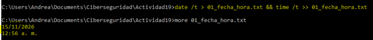
01_fecha_hora.txt.2. Procesos en ejecución
Comando ejecutado: tasklist /v > 02_procesos.txt
Análisis: El volcado de procesos activos en memoria RAM permitió identificar el nombre del equipo (DESKTOP-6IQHR2F) y auditar tanto los servicios en segundo plano (Sesión 0) como las aplicaciones interactivas (Sesión 1, DESKTOP-6IQHR2F\Andrea). Los procesos nucleares del sistema operativo (lsass.exe, services.exe, csrss.exe, wininit.exe) mantienen sus contextos de privilegios esperados (NT AUTHORITY\SYSTEM) sin indicios de suplantación de identidad. Asimismo, se verificó que los agentes de protección endpoint (Microsoft Defender mediante MsMpEng.exe y Reason Cybersecurity EDR mediante rsEDRSvc.exe) permanecen activos.
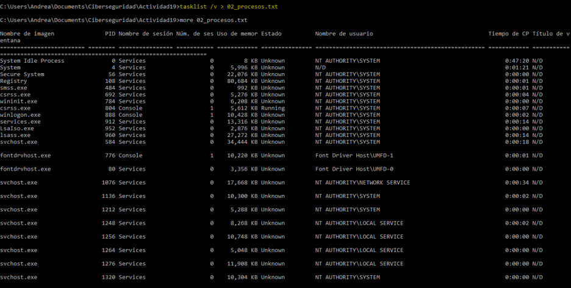
02_procesos.txt).3. Servicios del sistema (CMD vs. PowerShell)
Comandos ejecutados:
sc query state= all > 03_servicios_cmd.txt
Get-Service | Format-Table -AutoSize > 03_servicios_ps.txt
Análisis y diferencias apreciadas: El análisis mediante sc query confirmó que los servicios esenciales de seguridad —incluyendo WinDefend, el firewall mpssvc y el agente rsEDRSvc— operan en estado 4 RUNNING sin códigos de error (COD_SALIDA_WIN32: 0), mientras que los vectores habituales de administración remota (TermService, WinRM y RemoteRegistry) se encontraron detenidos (1 STOPPED). No obstante, se registraron servicios de red activos como LanmanServer, SharedAccess (ICS) y servidores web locales de National Instruments (NISystemWebServer, NIApplicationWebServer). Al contrastar Get-Service en PowerShell frente a sc query en CMD, se evidenció tanto la diferencia estructural (objetos tabulares resumidos frente a bloques detallados con tipo de proceso y códigos Win32) como la naturaleza dinámica del sistema en vivo: servicios como ClipSVC y msiserver cambiaron de STOPPED a Running entre ambas capturas.
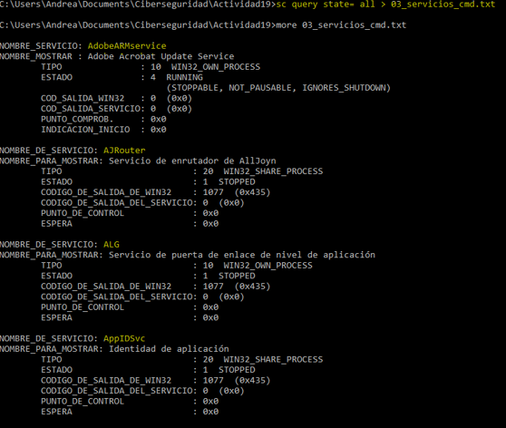
sc query y Get-Service.4. Usuarios actualmente logueados
Comandos ejecutados:
query user > 04_usuarios_activos.txt
.\NetUsers.exe /local > 04_usuarios_netusers.txt
Análisis: La consulta de sesiones activas mediante query user y su validación cruzada con NetUsers.exe confirmaron la existencia de una única sesión interactiva local (console, ID 1) correspondiente a la cuenta DESKTOP-6IQHR2F\Andrea. No se detectaron sesiones concurrentes de Escritorio Remoto (rdp-tcp) ni cuentas adicionales activas al momento de la intervención.
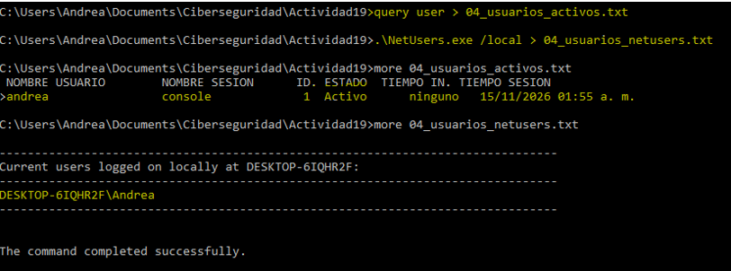
query user y NetUsers.exe.5. Usuarios que alguna vez se loguearon
Comandos ejecutados:
net user > 05_cuentas_locales.txt
wmic netlogin get Name, LastLogon, NumberOfLogons > 05_historial_login.txt
Análisis: La enumeración mediante net user identificó cinco cuentas locales en DESKTOP-6IQHR2F: la cuenta legítima Andrea y las cuentas nativas del sistema (Administrator, DefaultAccount, Guest y WDAGUtilityAccount), descartando la creación de usuarios ocultos o no autorizados. Con wmic netlogin se corroboró que solo DESKTOP-6IQHR2F\Andrea registra accesos interactivos (4,461 inicios de sesión acumulados), situando su última autenticación el 15/11/2026 a las 00:37:05 horas (UTC-6).
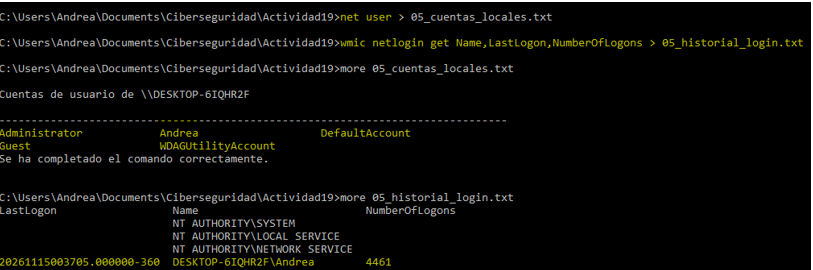
6. Información de red del sistema
Comando ejecutado: ipconfig /all > 06_info_red.txt
Análisis: El equipo opera con enrutamiento IP y proxy WINS deshabilitados. Su conectividad externa se cursa a través de la interfaz inalámbrica Dell Wireless 1707 802.11b/g/n (MAC F8-DA-0C-44-85-EF), configurada por DHCP con la dirección IPv4 192.168.1.6/24, direccionamiento IPv6 global (2806:2f0:62a0:e1be::/64) y servidor DNS en la puerta de enlace 192.168.1.1. Adicionalmente, se detectó activa una interfaz virtual VirtualBox Host-Only Ethernet Adapter (192.168.56.1/24), utilizada para entornos de virtualización local.
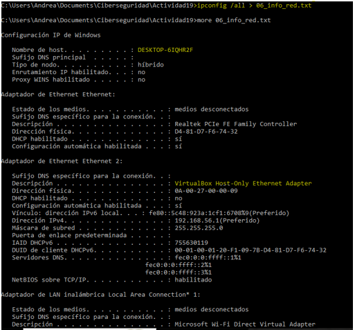
06_info_red.txt).7. Nombre y sesiones NetBIOS
Comandos ejecutados:
nbtstat -n > 07_netbios.txt
nbtstat -S >> 07_netbios.txt
Análisis: Los registros locales de NetBIOS confirman la pertenencia del host al grupo de trabajo WORKGROUP bajo el identificador DESKTOP-6IQHR2F (servicios <00> y <20>) en sus interfaces activas (192.168.1.6 y 192.168.56.1). La tabla de sesiones (nbtstat -S) arrojó cero conexiones activas (No hay conexiones), descartando transferencias de archivos o movimientos laterales en curso vía NetBIOS.
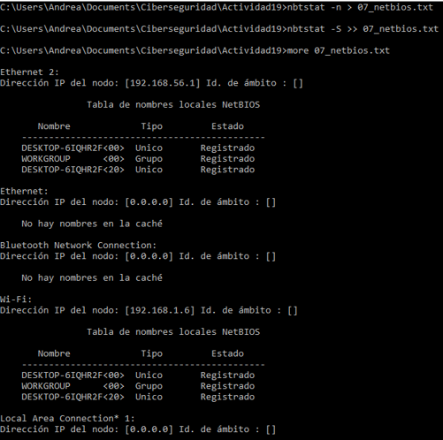
nbtstat.8. Conexiones establecidas y relación aplicación-puerto
Comandos ejecutados:
netstat -an > 08_conexiones.txt
netstat -anob > 09_aplicaciones_puestos.txt
Análisis: El cruce entre el estado de sockets y los identificadores de proceso (PID) validó que las conexiones externas en estado ESTABLISHED corresponden a aplicaciones legítimas identificadas previamente en memoria: Telegram.exe (PID 12800) conectado a 149.154.175.59:443, chrome.exe (PID 12544) hacia Google, WINWORD.EXE (PID 7884) y WpnService (PID 5556) hacia infraestructura de Microsoft, así como tráfico hacia 72.145.35.104:443. Asimismo, se detectaron múltiples servicios de National Instruments escuchando en todas las interfaces (0.0.0.0), destacando ApplicationWebServer.exe (PID 8004, puerto TCP 8080) y SystemWebServer.exe (PID 6648, puerto TCP 3582), además de lkads.exe (puerto 2343) y nisvcloc.exe (puerto 3580), lo que constituye un vector de exposición innecesario en la red local.
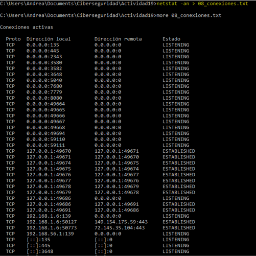
9. Caché DNS
Comando ejecutado: ipconfig /displaydns > 10_cache_dns.txt
Análisis: El análisis de la caché DNS reveló un indicio relevante de alteración en la resolución local de nombres: diez dominios externos —ocho pertenecientes a Corel (como apps.corel.com) y dos correspondientes a infraestructura en la nube— resuelven hacia 127.0.0.1 con un TTL estático de 601303 segundos y registro inverso PTR, apuntando a una modificación deliberada en el fichero hosts. El resto de las entradas corresponden a tráfico legítimo de WhatsApp, Adobe, Mozilla, actualizaciones de Microsoft y la interfaz interna desktop-6iqhr2f.mshome.net (172.19.112.1).
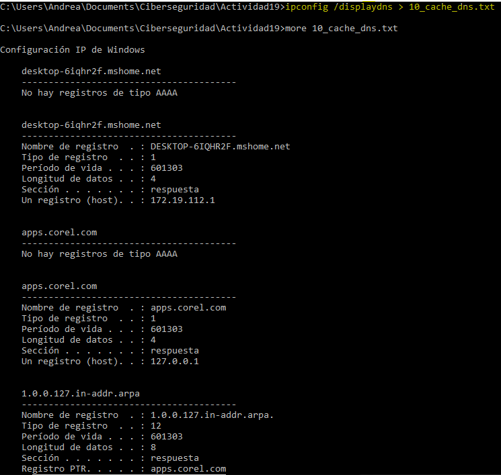
10_cache_dns.txt).10. Tabla ARP: comunicación MAC-IP
Comando ejecutado: arp -a > 11_tabla_arp.txt
Análisis: La inspección de la tabla ARP confirmó que en la interfaz inalámbrica (192.168.1.6) el equipo mantuvo comunicación reciente únicamente con su puerta de enlace (192.168.1.1, MAC c4-eb-ff-85-d9-b2) y con un host vecino de la misma subred (192.168.1.4, MAC f4-dd-06-60-eb-24). La unicidad entre direcciones físicas y lógicas descartó indicios de suplantación ARP (ARP Spoofing). La interfaz virtual 192.168.56.1 no presentó entradas dinámicas activas.
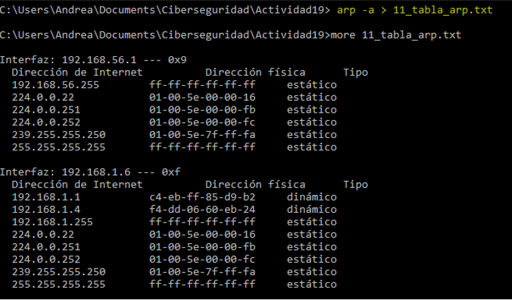
11_tabla_arp.txt).11. Perfiles de redes Wi-Fi
Comandos ejecutados:
netsh wlan show profiles > 12_redes_wifi.txt
netsh wlan show profile name="CC" key=clear
Análisis: Se extrajeron 19 perfiles de red inalámbrica almacenados en el sistema, clasificados en redes domésticas (Totalplay, Megacable, Infinitum), redes institucionales (CNT_UPSLP, UAE1_UPSLP, UAE1, CC, CID), puntos de acceso personales (iPhone de Andrea, S24+ de Santiago, HUAWEI P smart) y redes públicas compartidas (Club_Totalplay_WiFi). Este artefacto permite reconstruir la movilidad física del dispositivo e identificar su exposición previa a redes públicas vulnerables a ataques de intermediario (MitM).
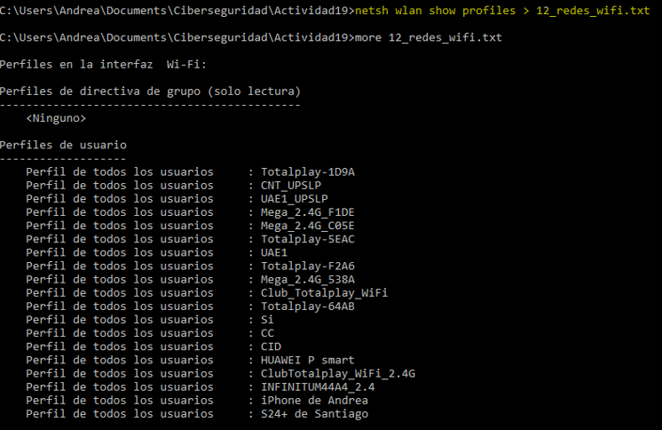
netsh wlan.12. Histórico del intérprete de comandos
Comando ejecutado: doskey /history > 13_historial_cmd.txt
Análisis: La extracción del historial de la sesión activa de Símbolo del sistema registró exclusivamente los comandos ejecutados por el equipo investigador dentro de C:\Users\Andrea\Documents\Ciberseguridad\Actividad19, proporcionando trazabilidad auditada de la intervención y documentando el efecto observador. Dado que doskey opera únicamente sobre el búfer volátil de la ventana cmd.exe en curso, en una fase posterior en disco correspondería auditar ConsoleHost_history.txt de PowerShell y archivos Prefetch.
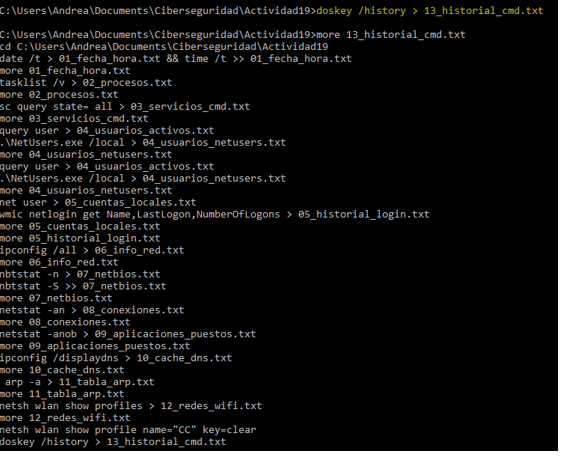
13_historial_cmd.txt).13. Unidades de red mapeadas
Comando ejecutado: net use > 14_unidades_mapeadas.txt
Análisis: La consulta arrojó un listado vacío (No hay entradas en la lista), confirmando que el sistema comprometido no mantiene conexiones activas ni persistentes hacia recursos de almacenamiento en servidores remotos.
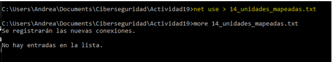
net use.14. Recursos compartidos locales
Comando ejecutado: net share > 15_recursos_compartidos.txt
Análisis: Se verificó que el sistema expone únicamente los recursos administrativos nativos de Windows (C$, IPC$ y ADMIN$), sin presencia de carpetas compartidas creadas por terceros para exfiltración o movimiento lateral.
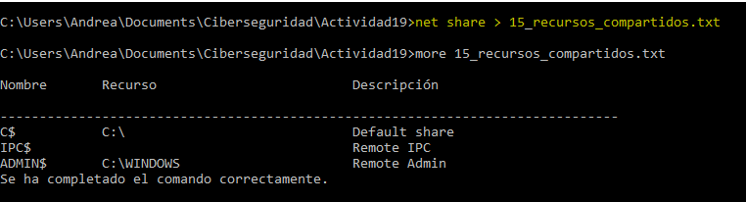
15_recursos_compartidos.txt).15. Información detallada del sistema
Comando ejecutado: systeminfo > 16_info_sistema.txt
Análisis: El host DESKTOP-6IQHR2F corresponde a un equipo portátil Dell Inspiron 5566 con procesador Intel x64 (~2901 MHz), 8,090 MB de memoria física y Windows 10 Pro (compilación 19045). Fue instalado originalmente el 22/12/2022, cuenta con 43 revisiones de seguridad aplicadas y registró su último arranque el 15/11/2026 a las 01:54:21 a. m. (UTC-6).
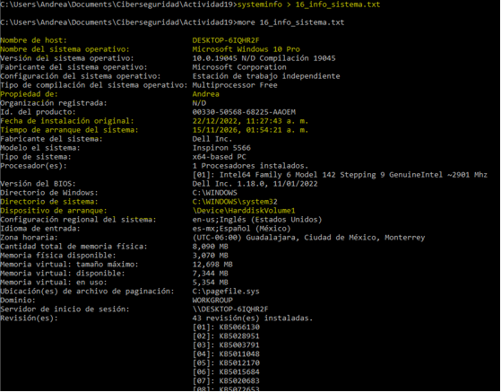
16_info_sistema.txt).16. Tareas programadas
Comando ejecutado: schtasks /query /fo LIST /v > 17_tareas_programadas.txt
Análisis: La revisión de tareas programadas permitió descartar mecanismos de persistencia maliciosa. En la carpeta raíz (\) se identificaron tareas vinculadas al usuario local Andrea, destacando \Iniciar ThrottStop (C:\ThrottleStop\ThrottleStop.exe, utilidad de control térmico que arrojó código de salida 2 al no hallar el binario) y tareas residuales de actualización de Opera (launcher.exe). Las demás tareas activas corresponden a software legítimo de Dell SupportAssist, Adobe Acrobat, National Instruments, Zoom, Google Chrome, Microsoft Office y servicios nativos de Windows.
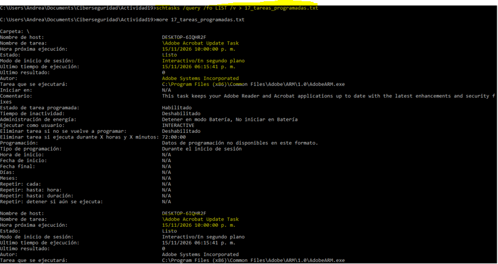
17_tareas_programadas.txt).17. Registro de eventos del sistema
Comando ejecutado: wevtutil epl System "C:\Users\Andrea\Desktop\LogsSystema.evtx"
Análisis: Se exportó el registro binario del sistema con un total de 34,839 eventos. Los registros asociados a Microsoft-Windows-WHEA-Logger muestran advertencias recurrentes vinculadas al controlador de puente PCI-a-PCI de chipset Intel sobre placa base Dell, mientras que los eventos de Microsoft-Windows-Time (Evento 158, VMICTimeProvider) confirman que el sistema operativo se ejecutaba directamente sobre hardware físico (bare-metal) y no como invitado virtual Hyper-V. Estas advertencias responden a políticas de administración de energía del bus PCIe y no representan indicadores de compromiso (IoC).
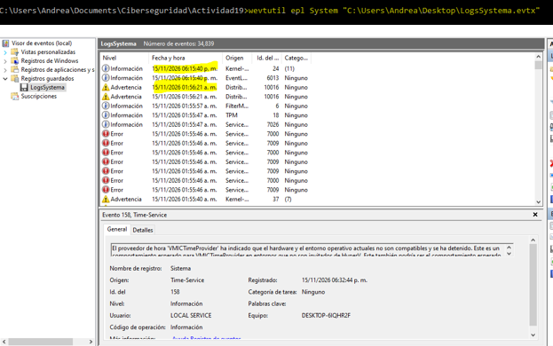
LogsSystema.evtx en el Visor de Eventos.18. Fichero hosts
Comando ejecutado: type C:\Windows\System32\drivers\etc\hosts > 19_fichero_hosts.txt
Análisis: La inspección directa del archivo hosts confirmó la causa raíz de las anomalías detectadas en la caché DNS durante el paso 9. El fichero presenta diez registros activos que redirigen hacia 127.0.0.1 ocho dominios de Corel (apps.corel.com, iws.corel.com, mc.corel.com, etc.) y dos dominios de infraestructura en la nube (deploy.akamaitechnologies.com y compute-1.amazonaws.com), seguidos del comentario # Corel 127.0.0.1. Si bien corresponde a un bloqueo local de telemetría de software de terceros, constituye un hallazgo relevante de seguridad al alterar la resolución DNS hacia nodos legítimos de Akamai y AWS.
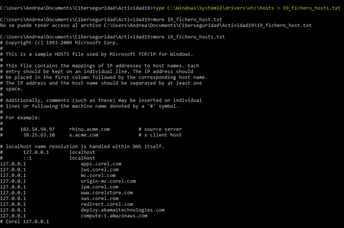
127.0.0.1 identificadas en el fichero hosts (19_fichero_hosts.txt).19. Árbol de creación de archivos
Comando ejecutado: dir C:\ /s /tc /o:d > 20_arbol_archivos_creacion.txt
Análisis: Se identificaron los directorios de fábrica dell (31/03/2017), Drivers, Apps y backup (07/07/2017), corroborando de manera independiente la atribución de hardware Dell obtenida en LogsSystema.evtx. Posteriormente aparecen las carpetas base del sistema operativo (Windows, Users, Program Files, Program Files (x86), PerfLogs) creadas el 07/12/2019, artefactos residuales de actualización fechados el 20/02/2025 y herramientas de desarrollo (Dev-Cpp, xampp, Java, Mikroe, ThrottleStop) instaladas cronológicamente.
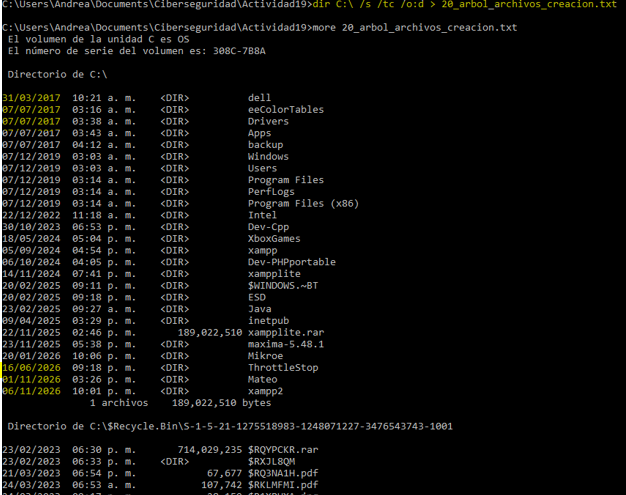
C:\ (20_arbol_archivos_creacion.txt).Conclusión y acciones de contención
La aplicación sistemática del protocolo de adquisición en caliente conforme a RFC 3227 permitió preservar de manera íntegra 20 artefactos volátiles y persistentes junto con el registro binario LogsSystema.evtx del equipo DESKTOP-6IQHR2F. El análisis técnico integral demuestra que el núcleo del sistema operativo, los mecanismos de autenticación y las soluciones de protección endpoint (Microsoft Defender y Reason EDR) mantienen su integridad operacional, descartándose compromisos activos de persistencia en servicios, tareas programadas, cuentas locales o canales C2 en red.
No obstante, se comprobaron anomalías relevantes de configuración y seguridad que requieren acciones inmediatas de contención y auditoría complementaria:
- 1. Restauración del fichero hosts y purga de caché DNS: Eliminar las 10 entradas no estándar en
C:\Windows\System32\drivers\etc\hosts(bloqueos de Corel, Akamai y AWS), restablecer la plantilla limpia de Microsoft y ejecutaripconfig /flushdns. - 2. Restricción de superficie de red local: Reconfigurar
ApplicationWebServer.exeySystemWebServer.exede National Instruments para escuchar únicamente en interfaz de bucle local (127.0.0.1) o bloquear los puertos TCP2343,3580,3582y8080mediante el Firewall de Windows Defender. - 3. Higiene de perfiles inalámbricos: Eliminar los perfiles Wi-Fi públicos compartidos (
Club_Totalplay_WiFi) mediantenetsh wlan delete profilepara evitar reconexiones automáticas en entornos no confiables.
Documentación de la práctica (PDF)
Puedes consultar el reporte completo de la práctica directamente a continuación o descargarlo en tu dispositivo: